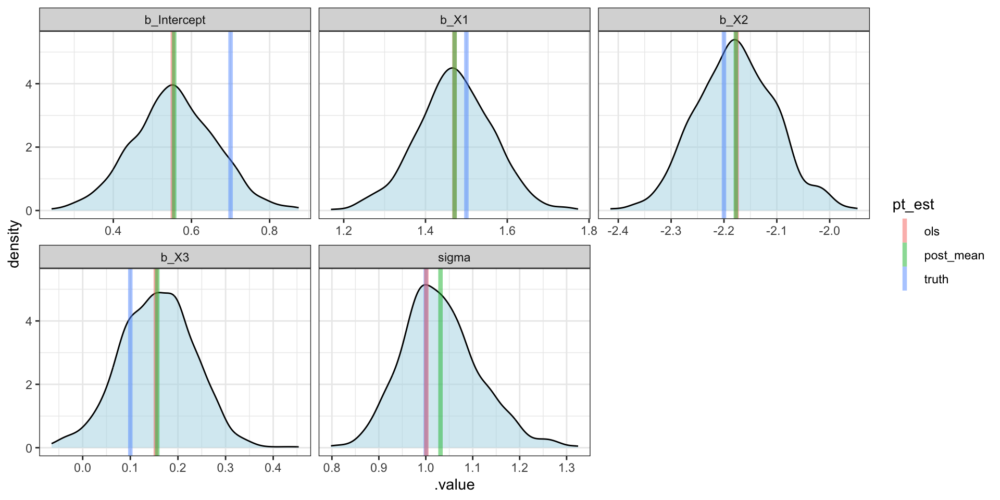

Lecture 02
Pretty much everything we a going to see in this course will fall under the umbrella of either linear or generalized linear models.
In previous classes most of your time has likely been spent with the iid case,
\[ y_i = \beta_0 + \beta_1 \, x_{i1} + \cdots + \beta_p \, x_{ip} + \epsilon_i \] \[ \epsilon_i \overset{iid}{\sim} N(0, \sigma^2) \]
these models can also be expressed as,
\[ y_i \overset{iid}{\sim} N(\beta_0 + \beta_1 \, x_{i1} + \cdots + \beta_p \, x_{ip},~ \sigma^2) \]
Observed values and scalars will usually be lower case letters, e.g. \(x_i, y_i, z_{ij}\).
Parameters will usually be greek symbols, e.g. \(\mu, \sigma, \rho\).
Vectors and matrices will be shown in bold, e.g. \(\boldsymbol{\mu}, \boldsymbol{X}, \boldsymbol{\Sigma}\).
Elements of a matrix (or vector) will be referenced with {}s, e.g.\(\big\{ \boldsymbol{Y} \big\}_{i}, \big\{ \boldsymbol{\Sigma} \big\}_{ij}\)
Random variables will be indicated by ~, e.g. \(x \sim \text{Norm}(0,1), z \sim \text{Gamma}(1,1)\)
Matrix / vector transposes will be indicated with \('\), e.g. \(\boldsymbol{A}', (1-\boldsymbol{B})'\)
We can also express a linear model using matrix notation as follows,
\[ \begin{aligned} \underset{n \times 1}{\boldsymbol{Y}} = \underset{n \times p}{\boldsymbol{X}} \, \underset{p \times 1}{\boldsymbol{\beta}} + \underset{n \times 1}{\boldsymbol{\epsilon}} \\ \underset{n \times 1}{\boldsymbol{\epsilon}} \sim N(\underset{n \times 1}{\boldsymbol{0}}, \; \sigma^2 \underset{n \times n}{\mathbb{1}_n}) \end{aligned} \]
or alternatively as,
\[ \underset{n \times 1}{\boldsymbol{Y}} \sim N\left(\underset{n \times p}{\boldsymbol{X}} \, \underset{p \times 1}{\boldsymbol{\beta}},~ \sigma^2 \underset{n \times n}{\mathbb{1}_n}\right) \]
For an \(n\)-dimension multivate normal distribution with covariance \(\boldsymbol{\Sigma}\) (positive semidefinite) can be written as
\[ \underset{n \times 1}{\boldsymbol{Y}} \sim N(\underset{n \times 1}{\boldsymbol{\mu}}, \; \underset{n \times n}{\boldsymbol{\Sigma}}) \]
where \(\big\{\boldsymbol{\Sigma}\big\}_{ij} = \rho_{ij} \sigma_i \sigma_j\)
\[ \begin{pmatrix} y_1\\ y_2\\ \vdots\\ y_n \end{pmatrix} \sim N\left( \begin{pmatrix} \mu_1\\ \mu_2\\ \vdots\\ \mu_n \end{pmatrix}, \, \begin{pmatrix} \rho_{11}\sigma_1\sigma_1 & \rho_{12}\sigma_1\sigma_2 & \cdots & \rho_{1n}\sigma_1\sigma_n \\ \rho_{21}\sigma_2\sigma_1 & \rho_{22}\sigma_2\sigma_2 & \cdots & \rho_{2n}\sigma_2\sigma_n\\ \vdots & \vdots & \ddots & \vdots \\ \rho_{n1}\sigma_n\sigma_1 & \rho_{n2}\sigma_n\sigma_2 & \cdots & \rho_{nn}\sigma_n\sigma_n \\ \end{pmatrix} \right) \]
For the \(n\) dimensional multivate normal given on the last slide, its density is given by
\[ f\big(\boldsymbol{Y} | \boldsymbol{\mu}, \boldsymbol{\Sigma}\big) = (2\pi)^{-n/2} \; \det(\boldsymbol{\Sigma})^{-1/2} \; \exp{\left(-\frac{1}{2} \underset{1 \times n}{(\boldsymbol{Y}-\boldsymbol{\mu})'} \underset{n \times n}{\boldsymbol{\Sigma}^{-1}} \underset{n \times 1}{(\boldsymbol{Y}-\boldsymbol{\mu})}\right)} \]
and its log density is given by
\[ \log f\big(\boldsymbol{Y} | \boldsymbol{\mu}, \boldsymbol{\Sigma}\big) = -\frac{n}{2} \log 2\pi - \frac{1}{2} \log \det(\boldsymbol{\Sigma}) - \frac{1}{2} \underset{1 \times n}{(\boldsymbol{Y}-\boldsymbol{\mu})'} \underset{n \times n}{\boldsymbol{\Sigma}^{-1}} \underset{n \times 1}{(\boldsymbol{Y}-\boldsymbol{\mu})} \]
The following come from the Matrix Cookbook Chapters 1 & 2.
\[ \begin{aligned} (\boldsymbol{A} \boldsymbol{B})' &= \boldsymbol{B}' \boldsymbol{A}' \\ (\boldsymbol{A} + \boldsymbol{B})' &= \boldsymbol{A}' + \boldsymbol{B}' \\ (\boldsymbol{A}')^{-1} &= (\boldsymbol{A}^{-1})' \\ (\boldsymbol{A}\boldsymbol{B}\boldsymbol{C}\ldots)^{-1} &= \ldots\boldsymbol{C}^{-1} \boldsymbol{B}^{-1} \boldsymbol{A}^{-1} \\ \\ \det(\boldsymbol{A}') &= \det(\boldsymbol{A}) \\ \det(\boldsymbol{A} \boldsymbol{B}) &= \det(\boldsymbol{A}) \det(\boldsymbol{B}) \\ \det(c\boldsymbol{A}) &= c^n \det(\boldsymbol{A}) \\ \det(\boldsymbol{A}^n) &= \det(\boldsymbol{A})^n \\ \end{aligned} \]
\[ \begin{aligned} \partial \boldsymbol{A} &= 0 \qquad\qquad \text{(where $\boldsymbol{A}$ is constant)}\\ \partial (a\boldsymbol{X}) &= a (\partial \boldsymbol{A})\\ \partial (\boldsymbol{X} + \boldsymbol{Y}) &= \partial \boldsymbol{X} + \partial \boldsymbol{Y} \\ \partial (\boldsymbol{X} \boldsymbol{Y}) &= (\partial \boldsymbol{X}) \boldsymbol{Y} + \boldsymbol{X} (\partial \boldsymbol{Y}) \\ \partial (\boldsymbol{X}') &= (\partial \boldsymbol{X})' \\ \partial (\boldsymbol{X}'\boldsymbol{A}\boldsymbol{X}) &= (\boldsymbol{A} + \boldsymbol{A}')\boldsymbol{X} \\ \end{aligned} \]
Lets generate some simulated data where the underlying model is known and see how various regression procedures function.
\[ Y_i = \beta_0 + \beta_1 X_{1i} + \beta_2 X_{2i} + \beta_3 X_{3i} +\epsilon_i \] \[ \epsilon_i \sim N(0,1) \] \[ \beta_0 = 0.7,~ \beta_1 = 1.5,~ \beta_2 = -2.2,~ \beta_3 = 0.1 \]
# A tibble: 100 × 4
`(Intercept)` X1 X2 X3
<dbl> <dbl> <dbl> <dbl>
1 1 0.557 0.897 -1.46
2 1 0.758 0.375 -0.945
3 1 0.273 3.81 -0.675
4 1 1.41 -0.0745 0.514
5 1 1.01 0.623 -1.99
6 1 0.942 -0.00618 0.700
7 1 1.66 1.57 0.0478
8 1 -1.09 0.766 1.33
9 1 -0.296 1.40 -0.0914
10 1 -0.0604 0.396 -0.0527
# ℹ 90 more rowsLet \(\hat{\boldsymbol{Y}}\) be our estimate for \(\boldsymbol{Y}\) based on our estimate of \(\boldsymbol{\beta}\), \[ \hat{\boldsymbol{Y}} = \hat{\beta}_0 + \hat{\beta}_1 \, \boldsymbol{X}_{1} + \hat{\beta}_2 \, \boldsymbol{X}_{2} + \hat{\beta}_3 \, \boldsymbol{X}_{3} = \boldsymbol{X}\, \hat{\boldsymbol{\beta}} \]
The least squares estimate, \(\hat{\boldsymbol{\beta}}_{ls}\), is given by \[ \hat{\boldsymbol{\beta}}_{ls} = \underset{\boldsymbol{\beta}}{\text{argmin}} \sum_{i=1}^n \left( Y_i - \boldsymbol{X}_{i\cdot} \boldsymbol{\beta} \right)^2 \]
Previously we showed that, \[ \hat{\boldsymbol{\beta}}_{ls} = (\boldsymbol{X}' \boldsymbol{X})^{-1} \boldsymbol{X}' \, \boldsymbol{Y} \]
[,1]
(Intercept) 0.5522298
X1 1.4708769
X2 -2.1761159
X3 0.1535830We will be fitting the same model as described above, we just need to provide some additional information in the form of a prior for our model parameters (the \(\beta\)s and \(\sigma^2\)).
\[ \begin{aligned} f(\theta | x) &= \frac{f(x | \theta) \; \pi(\theta)}{\int f(x|\theta) d\theta} \\ &\propto f(x|\theta) \; \pi(\theta) \end{aligned} \]
The posterior (\(f(\theta|x)\)) reflects an updated set of beliefs about the parameters (\(\theta\)) based on the observed data (\(x\)) via the likelihood (\(f(x|\theta)\))
Most of the time the posterior will not have a closed form so we will use a technique like MCMC to draw samples
Our inference will be based on the posterior distribution and not a point estimate (e.g. MLE)
brmsWe will be using a package called brms for most of our Bayesian model fitting
it has a convenient model specification syntax
mostly sensible prior defaults
supports most of the model types we will be exploring
uses Stan behind the scenes
SAMPLING FOR MODEL '5b915c1884e4d61e6f4b93f33ea6a1dc' NOW (CHAIN 1).
Chain 1:
Chain 1: Gradient evaluation took 1e-05 seconds
Chain 1: 1000 transitions using 10 leapfrog steps per transition would take 0.1 seconds.
Chain 1: Adjust your expectations accordingly!
Chain 1:
Chain 1:
Chain 1: Iteration: 1 / 2000 [ 0%] (Warmup)
Chain 1: Iteration: 200 / 2000 [ 10%] (Warmup)
Chain 1: Iteration: 400 / 2000 [ 20%] (Warmup)
Chain 1: Iteration: 600 / 2000 [ 30%] (Warmup)
Chain 1: Iteration: 800 / 2000 [ 40%] (Warmup)
Chain 1: Iteration: 1000 / 2000 [ 50%] (Warmup)
Chain 1: Iteration: 1001 / 2000 [ 50%] (Sampling)
Chain 1: Iteration: 1200 / 2000 [ 60%] (Sampling)
Chain 1: Iteration: 1400 / 2000 [ 70%] (Sampling)
Chain 1: Iteration: 1600 / 2000 [ 80%] (Sampling)
Chain 1: Iteration: 1800 / 2000 [ 90%] (Sampling)
Chain 1: Iteration: 2000 / 2000 [100%] (Sampling)
Chain 1:
Chain 1: Elapsed Time: 0.011769 seconds (Warm-up)
Chain 1: 0.012256 seconds (Sampling)
Chain 1: 0.024025 seconds (Total)
Chain 1:
SAMPLING FOR MODEL '5b915c1884e4d61e6f4b93f33ea6a1dc' NOW (CHAIN 2).
Chain 2:
Chain 2: Gradient evaluation took 5e-06 seconds
Chain 2: 1000 transitions using 10 leapfrog steps per transition would take 0.05 seconds.
Chain 2: Adjust your expectations accordingly!
Chain 2:
Chain 2:
Chain 2: Iteration: 1 / 2000 [ 0%] (Warmup)
Chain 2: Iteration: 200 / 2000 [ 10%] (Warmup)
Chain 2: Iteration: 400 / 2000 [ 20%] (Warmup)
Chain 2: Iteration: 600 / 2000 [ 30%] (Warmup)
Chain 2: Iteration: 800 / 2000 [ 40%] (Warmup)
Chain 2: Iteration: 1000 / 2000 [ 50%] (Warmup)
Chain 2: Iteration: 1001 / 2000 [ 50%] (Sampling)
Chain 2: Iteration: 1200 / 2000 [ 60%] (Sampling)
Chain 2: Iteration: 1400 / 2000 [ 70%] (Sampling)
Chain 2: Iteration: 1600 / 2000 [ 80%] (Sampling)
Chain 2: Iteration: 1800 / 2000 [ 90%] (Sampling)
Chain 2: Iteration: 2000 / 2000 [100%] (Sampling)
Chain 2:
Chain 2: Elapsed Time: 0.011768 seconds (Warm-up)
Chain 2: 0.012004 seconds (Sampling)
Chain 2: 0.023772 seconds (Total)
Chain 2: Family: gaussian
Links: mu = identity; sigma = identity
Formula: Y ~ X1 + X2 + X3
Data: d (Number of observations: 100)
Draws: 2 chains, each with iter = 2000; warmup = 1000; thin = 1;
total post-warmup draws = 2000
Population-Level Effects:
Estimate Est.Error l-95% CI u-95% CI Rhat Bulk_ESS Tail_ESS
Intercept 0.55 0.11 0.34 0.77 1.00 2446 1206
X1 1.47 0.09 1.30 1.64 1.00 2501 1408
X2 -2.18 0.08 -2.32 -2.02 1.00 2280 1661
X3 0.15 0.08 -0.01 0.31 1.00 2354 1455
Family Specific Parameters:
Estimate Est.Error l-95% CI u-95% CI Rhat Bulk_ESS Tail_ESS
sigma 1.03 0.08 0.90 1.19 1.00 2039 1556
Draws were sampled using sampling(NUTS). For each parameter, Bulk_ESS
and Tail_ESS are effective sample size measures, and Rhat is the potential
scale reduction factor on split chains (at convergence, Rhat = 1).# A tibble: 10,000 × 5
# Groups: .variable [5]
.chain .iteration .draw .variable .value
<int> <int> <int> <chr> <dbl>
1 1 1 1 b_Intercept 0.682
2 1 2 2 b_Intercept 0.575
3 1 3 3 b_Intercept 0.535
4 1 4 4 b_Intercept 0.545
5 1 5 5 b_Intercept 0.551
6 1 6 6 b_Intercept 0.554
7 1 7 7 b_Intercept 0.516
8 1 8 8 b_Intercept 0.582
9 1 9 9 b_Intercept 0.575
10 1 10 10 b_Intercept 0.422
# ℹ 9,990 more rows(post_sum = post |>
group_by(.variable, .chain) |>
summarize(
post_mean = mean(.value),
post_median = median(.value),
.groups = "drop"
)
)# A tibble: 10 × 4
.variable .chain post_mean post_median
<chr> <int> <dbl> <dbl>
1 b_Intercept 1 0.551 0.551
2 b_Intercept 2 0.552 0.555
3 b_X1 1 1.47 1.47
4 b_X1 2 1.47 1.47
5 b_X2 1 -2.17 -2.17
6 b_X2 2 -2.18 -2.18
7 b_X3 1 0.155 0.155
8 b_X3 2 0.153 0.155
9 sigma 1 1.03 1.02
10 sigma 2 1.03 1.03 # A tibble: 5 × 4
.variable truth ols post_mean
<chr> <dbl> <dbl> <dbl>
1 b_Intercept 0.7 0.552 0.551
2 b_X1 1.5 1.47 1.47
3 b_X2 -2.2 -2.18 -2.17
4 b_X3 0.1 0.154 0.155
5 sigma 1 1.00 1.03 post |>
filter(.chain == 1) |>
ggplot(aes(x=.value)) +
geom_density(alpha=0.5, fill="lightblue") +
facet_wrap(~.variable, scale="free_x") +
geom_vline(
data = pt_est |> tidyr::pivot_longer(cols = truth:post_mean, names_to = "pt_est", values_to = "value"),
aes(xintercept = value, color=pt_est),
alpha = 0.5, linewidth=1.5
)Sta 344/644 - Fall 2023
